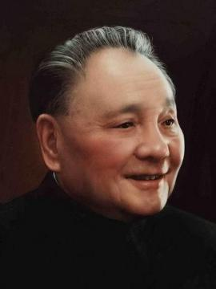
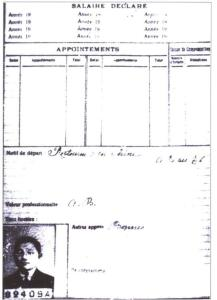
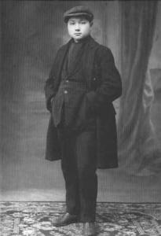
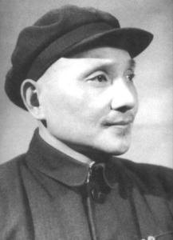
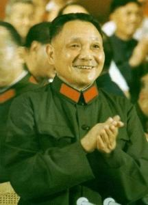

邓小平

邓小平（1904年8月22日－1997年2月19日），四川广安人，原名邓先圣，后由启蒙老师改名为邓希贤，中国共产党第二代领导核心领导者，马克思主义者，无产阶级革命家、政治家、军事家、外交家，中国人民解放军、中华人民共和国的主要领导人之一。
邓小平是中国社会主义改革开放和现代化建设的总设计师，创立了邓小平理论，被称为中国改革开放和现代化建设的“总设计师”。他所倡导的“改革开放”及“一国两制”政策理念，改变了20世纪后期的中国，也影响了世界，因此在1978年和1985年，曾两次当选《时代周刊》“年度风云人物”。
人物生平
 早年经历


1904年8月22日，生于四川省广安县协兴乡牌坊村，取名邓先圣。
1909年，进私塾读书，学名邓希贤。
1910年，入协兴乡初级小学学习。
1915年，入广安县高等小学学习。
1918年，入广安县立中学学习。
1919年5月4日，北京爆发学生群众反帝爱国运动。
1919年秋，考入重庆勤工俭学留法预备学校。
1920年10月，抵达法国，不久入诺曼底区巴耶男子中学学习。
1921年4月，到克鲁梭市施奈德钢铁总厂当轧钢工。月底，辞去工作赴巴黎。7月下旬，中国共产党成立。10月，进香布朗工厂做工，两个星期后被解雇。
1922年2月，进哈金森橡胶厂做工。1922年夏，参加旅欧中国少年共产党（次年改名为旅欧中国共产主义青年团，也称中国社会主义青年团旅欧支部）。
1923年夏，参加旅欧共青团支部工作，开始了职业革命家的生涯。
1924年，参加旅欧共青团机关刊物《赤光》的编辑工作。7月，当选为旅欧共青团执行委员会书记局委员，同时转为中国共产党党员。
1925年春，任中共旅欧支部里昂地区特派员。6月至9月，参与组织旅法华人多次举行的声援国内五卅反帝运动的大规模示威和集会。11月，进雷诺汽车厂做钳工。
1926年1月17日，邓小平第一次踏上了俄罗斯的领土，在中国共产党莫斯科支部代表们的带领下前往莫斯科东方大学报到。在东方劳动者共产主义大学呆了仅仅12天，邓小平就转到了莫斯科中山大学，被分到了七班。
土地革命
1927年春，离苏回国，受中共派遣，到冯玉祥的国民联军所属西安中山军事学校工作，任政治处处长、学校中共组织的书记。
第一次国共合作破裂后，改名邓小平，8月7日在武汉参加中共中央紧急会议。年底随中央机关迁往上海。
1928～1929年任中共中央秘书长。
1928年年初，和张锡瑗结婚。
1929年夏，作为中央代表前往广西领导起义，化名邓斌，同张云逸等于12月和次年2月，先后发动百色起义和龙州起义，创建中国工农红军第七军、第八军和左江、右江革命根据地，任红七军、红八军政治委员和前敌委员会书记。
1931年夏，到江西中央根据地，先后担任中共瑞金县委书记、会昌中心县委书记、江西省委宣传部长。
1933年5月，遭“左”倾路线打击，被撤销职务，受党内“最后严重警告”处分，到乐安县南村当巡视员。不久，调任红军总政治部秘书长。8月，主编红军总政治部主办的《红星》报。
1934年10月，随中央红军长征。年底，任中共中央秘书长。
1935年1月，参加在贵州遵义召开的中共中央政治局扩大会议。会议确立了以毛泽东为代表的新的中央的正确领导。6月，调任红一军团政治部宣传部长。10月，中央红军长征到达陕北。
1936年5月，任红一军团政治部副主任，后任主任。
抗日战争抗日战争爆发后，任国民革命军第八路军政治部副主任。
1938年1月，任八路军一二九师政治委员，与师长刘伯承一起在太行山区开辟晋冀豫边区抗日根据地。9月至11月，参加在延安召开的中共扩大的六届六中全会。全会确定，要不断巩固和扩大抗日民族统一战线，并重申党的独立自主地放手组织人民抗日武装斗争的方针。在会上作关于地方工作的报告。
1939年7月3日，参加在延安召开的中共中央政治局扩大会议。9月，同卓琳结婚，后一起回到太行山。
1940年8月至12月，参与指挥百团大战。百团大战是八路军在华北地区发动的一次规模最大的带有战略性的对日军的进攻战役
1941年4月15日，发表《党与抗日民主政权》一文，阐述中国共产党关于建立抗日民主政权的基本理论和政策。
1942年9月，兼任中共中央北方局太行分局书记。
1943年10月6日，中共中央北方局与太行分局合并，代理中共中央北方局书记，主持八路军总部的工作，在艰苦的条件下担负起领导华北敌后抗日根据地党政军的全面工作。
1945年在中共第七次全国代表大会上当选为中央委员。8月，日本宣布投降。此时，与刘伯承领导的抗日根据地已扩大为太行、太岳、冀鲁豫、冀南等四个地区。
解放战争解放战争时期，任中国人民解放军晋冀鲁豫野战军、中原野战军、第二野战军政治委员，晋冀鲁豫中央局书记，中原局、华东局第一书记。
1945年9月至11月同刘伯承一起领导了上党战役、邯郸战役。
1946年6月，蒋介石大举进攻中原解放区，发动全面内战。8月至翌年1月，与刘伯承先后组织指挥了陇海、定陶、鄄城、滑县、钜（野）金（台）鱼（乡）等战役。
1947年5月，任中共中央中原局书记。6月30日，同刘伯承率晋冀鲁豫野战军主力，强渡黄河，发动鲁西南战役，揭开了人民解放军全国性战略进攻的序幕。8月，同刘伯承率野战军主力，千里跃进大别山地区。在国民党军重兵围攻中坚持了大别山斗争，把战线推进到长江北岸，在中原地区站稳了脚。
1948年5月9日，任中共中央中原局第一书记、中原军区及中原野战军政治委员。5月，与刘伯承发起宛东战役。7月，与刘伯承发起襄樊战役。9月至翌年1月，人民解放军进行了辽沈战役、淮海战役、平津战役，摧毁了蒋介石赖以维持其反动统治的主要军事力量。11月16日，中共中央军委决定由刘伯承、陈毅、邓小平、粟裕、谭震林组成总前委，邓小平任书记，指挥淮海战役。淮海战役共歼灭国民党军55万人。
1949年2月5日，中原野战军改编为第二野战军，任政治委员。3月，参加中共七届二中全会，后任中共中央华东局第一书记。3月31日，为总前委起草《京沪杭战役实施纲要》。4月至5月，同刘伯承、陈毅等指挥渡江战役，解放南京、上海及苏、皖、浙、赣、闽等省广大地区。
建国初期1949年9月30日，在中国人民政治协商会议第一届全体会议上，当选为中央人民政府委员。10月1日，出席中华人民共和国开国大典。10月19日，在中央人民政府委员会第三次会议上，被任命为中国人民革命军事委员会委员。10月至12月，同刘伯承等率部进军西南，解放川、康、滇、黔等省。11月23日，任中共中央西南局第一书记。12月2日，任西南军政委员会副主席。
1950年2月22日，任西南军区政治委员。是年，领导西南地区的土地改革、剿匪、政权建设、恢复和发展生产。
1951年，领导进军西藏工作。西藏和平解放。
1952年7月调往中央工作，任中央人民政府政务院（1954年改为国务院）副总理兼财经委员会副主任，后又兼任政务院交通办公室主任和财政部部长。
1954年4月，任中共中央秘书长、组织部部长。9月，任国务院副总理、国防委员会副主席、中共中央军事委员会委员。
1955年3月，在中国共产党全国代表会议上，代表中央作《关于高岗、饶漱石反党联盟的报告》。4月，在中共七届五中全会上，增选为中央政治局委员。
1956年9月在中共第八次全国代表大会上，作修改党章的报告。在八届一中全会上，当选为中央政治局委员、中央政治局常务委员、中央书记处总书记，成为以毛泽东为核心的中国共产党第一代领导集体的重要成员。
1957年11月，随毛泽东率领的中国党政代表团出访苏联，参加十月革命40周年庆祝大会、各国共产党和工人党代表会议。
1958年8月，出席中共中央政治局在北戴河举行的扩大会议。会议作出《关于在农村建立人民公社问题的决议》。9月至11月，到黑龙江、吉林、辽宁、广西、云南、贵州、四川等地视察工作。11月至12月，出席在武昌召开的中共八届六中全会，作关于人民公社若干问题决议的说明。
1959年9月，任中共中央军事委员会常务委员。
1960年11月至12月，与刘少奇率中国党政代表团参加在苏联莫斯科举行的十月革命43周年庆典和81个国家的共产党、工人党代表会议。
1961年8月至9月，出席中共中央在庐山召开的工作会议。
1962年2月6日，在扩大的中央工作会议（又称“七千人大会”）上讲话，强调要发扬党的革命传统，加强民主集中制。
1963年7月，率中国共产党代表团赴莫斯科，同苏联共产党代表团举行会谈，坚决维护中国共产党的独立自主原则。
1965年3月，针对江青等对文艺界人士和文艺作品的错误批判，在主持召开的中央书记处会议上提出严厉批评。 在任中央书记处总书记的10年中，协助中央主席、副主席主持中央的日常工作，为社会主义制度的建立和发展、为探索适合中国国情的建设社会主义道路，进行了卓有成效的工作。
伟人逝世1997年2月19日，在北京逝世，享年93岁。